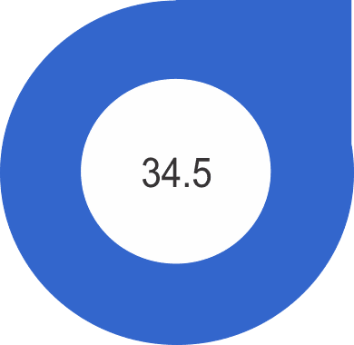

¿Qué es el Plan de Desarrollo Urbano PDU 2040?
El Plan Director Urbano es el instrumento que define las directrices hacia el desarrollo
sostenible de nuestra ciudad con una proyección hacia el año 2040 considerando la participación ciudadana como
principio rector para la construcción de un escenario de futuro o visión de largo plazo. Identificando así los
componentes claves para construir el futuro anhelado, planteando la relación de unos con otros y fomentando su
evaluación técnica y social para garantizar el cumplimiento de la visión.
El procedimiento mediante el cual se concretó la elaboración del Plan y sus posteriores
actualizaciones, se integró de dos componentes fundamentales: por un lado, la participación ciudadana e
institucional, en amplios procesos participativos en donde se validó la información recopilada para el Plan y se
estableció el escenario de largo plazo, así como los acuerdos sobre las estrategias; por el otro, el proceso
técnico, el cual vinculó e integró los resultados del proceso de participación, que adicionalmente enriquece el
instrumento a través de la investigación e involucramiento de expertos nacionales e internacionales en los ejes
estratégicos que condicionan el desarrollo de la ciudad como son el urbanismo, la economía, el medio ambiente y la
movilidad entre otros.
De esta forma, Chihuahua definió su instrumento rector de desarrollo urbano sostenible y
atiende de manera efectiva al adecuado crecimiento territorial, preservando sus recursos ambientales y
garantizando el desarrollo armónico de nuestra ciudad y sus habitantes.
TEMAS ESTRATÉGICOS
Población, Desarrollo Social y Cultura Urbana
La ciudad es mayormente el resultado de sus expresiones, por tanto, la dinámica
poblacional sigue siendo un tema central para la actualización del Plan de Desarrollo Urbano, tanto en su
demografía, su desarrollo social como en sus aspectos culturales.
El crecimiento poblacional ha tenido una importante recuperación respecto al quinquenio
inmediato anterior lo cual se atribuye a factores de bienestar y desarrollo económico que generan inmigración a
Chihuahua como una ciudad atractiva.
Por otro lado la ciudad, en su ámbito urbano, sigue concentrando el mayor porcentaje de la
población del municipio, lo que benefició al aumento de la densidad de población en poco más de un punto respecto
a la densidad registrada en 2010, de tal forma que se puede afirmar una mejoría en el aprovechamiento del suelo al
interior de la mancha urbana, que representa un avance importante ante el cambio del esquema de crecimiento
disperso.
Sin más, le alentamos a consultar a continuación ambas secciones del diagnóstico y
estrategias, de los cuales se proporcionan los capítulos en su totalidad, en versión descargable.
Diagnóstico
Desarrollo Social Fuente: CONEVAL 2015, con referencia al Censo General de Población
y
Vivienda 2010.
Desarrollo Social. Fuente: CONEVAL 2015, con referencia al Censo General de Población y
Vivienda 2010.
Demografía. Habitantes por hectárea

Estrategia
Las estrategias desarrolladas en relación a aspectos sociales, buscan el generar las
condiciones para asegurar el bienestar común de la población, para lo cual es necesario un compromiso colectivo de
civilidad en los distintos sectores de la población, esto bajo un esquema de libertad dentro del margen de la
legalidad.
Barrios Tradicionales. La estrategia para los barrios tradicionales consiste en el
desarrollo equilibrado y sustentable de estas zonas a través de implementar un modelo de gestión adecuado a su
complejidad, que asegure su formalización, operación y seguimiento, así como el empoderamiento social para el
control de acciones urbanas en estas zonas.
Polígonos de Concentración Urbana. Son una herramienta del Gobierno Federal, para
controlar la expansión de la mancha urbana y enfocar los esfuerzos públicos y privados tendientes a consolidar la
ciudad. La presente adecuación a los PCU se enfoca en la nueva política de vivienda impulsada mediante el Programa
Nacional de Vivienda 2014-2018.
Archivos Descargables
Soporte Urbano para la Economía
En cuanto al sector económico se refiere, Chihuahua como municipio ocupa el 2do lugar,
aportando el 35% del total en el estado; se considera un municipio medianamente diversificado es decir, existe un
balance en las actividades económicas, con una fuerte presencia de empresas industriales y constructoras, pero el
sector terciario es el de mayor peso, principalmente por el sector gubernamental, el comercio, transporte y los
servicios relacionados con la industria.
De acuerdo al Censo Económico 2014, El municipio cuenta con una Producción Bruta Total de
123'027,910,000 pesos anuales, y con un promedio de 9 personas ocupadas por Unidad Económica.
Diagnóstico
Estrategia
Polígono de Concentración Urbana, Zona Metropolitana. Para lograr un correcto y
equilibrado desarrollo de la Zona Metropolitana de Chihuahua se plantea:
- Equilibrar territorialmente usos en la zona conurbada.
- Planear estrategia de movilidad para facilitar comunicación de zonas habitacionales.
- Lugares de trabajo, de estudio y comercio.
- Fortalecer y ordenar corredores metropolitanos de comercios y servicios.
- Proponer nuevos núcleos de equipamientos metropolitanos y regionales.
- Diseñar un sistema de movilidad metropolitana basada en el transporte y en la movilidad alternativa (sendas
metropolitanas).
- Acciones para impulsar una estrategia de usos mixtos, densificación y ciudad compacta.
Archivos Descargables
Estructura Urbana, Suelo y Vivienda
El desarrollo de la ciudad se da en respuesta a numerosos factores entre los que se
incluyen los elementos físicos, como infraestructura, relieve, cuerpos de agua, etc. así como socioeconómicos.
Ambos aspectos se encuentran interrelacionados y los cambios en uno modifican al otro, es de tal forma que la
ciudad ha atravesado por etapas de desarrollo muy marcadas.
El patrón de ocupación que sigue la ciudad de Chihuahua es básicamente horizontal, con un
gran consumo de suelo. No obstante, en los últimos tres años ha comenzado una tendencia de crecimiento vertical
que se ve reflejada en la construcción de edificios de uso mixto con uso habitacional, comercio y servicios. Es
importante puntualizar que este modelo de desarrollo va dirigido a un mercado de nivel de renta alto, lo que
representa menos del 8% de la población.
Sin más, le alentamos a consultar a continuación ambas secciones del diagnóstico y
estrategias, de los cuales se proporcionan los capítulos en su totalidad, en versión descargable.
Diagnóstico
Estrategia
Territorio y Estructura Urbana. Considerando lo expuesto en el diagnóstico de la
presente actualización, se plantea necesario realizar las modificaciones necesarias respecto a usos de suelo,
estructura vial establecida, normatividad, condicionantes de uso de suelo y estrategia general de Plan, respecto a
las dinámicas económicas y sociales prevalecientes que condicionan la ocupación del suelo.
CD. Se consideran nuevos centros distritales en la zona de las Tres Presas, la
bifurcación de los ejes carreteros regionales de vía libre y vía de cuota a Ciudad Juárez, y el entorno del
aeropuerto, en la confluencia de la futura Av. Tabalaopa con el Blvd. Juan Pablo II.
ZEID. Zonas Especiales de integración al Desarrollo; se integra ZEID Norte.
PAC. Polígonos de Actuación Concentrada; La Haciendita y Zona Aeropuerto.
PCU. Polígonos de Concentración Urbana; son una herramienta del Gobierno
Federal, para controlar la expansión de la mancha urbana y enfocar los esfuerzos públicos y privados tendientes a
consolidar la ciudad. La presente adecuación a los PCU se enfoca en la nueva política de vivienda impulsada
mediante el Programa Nacional de vivienda 2014-2018.
Archivos Descargables
El respeto al medio ambiente y los recursos naturales constituye una estrategia permanente
en la planificación urbana integral. La necesidad de regular, ordenar, y facilitar la vida de las poblaciones está
intrínsecamente ligada a la necesidad de conocer sistemáticamente las interacciones que mantienen las actividades
humanas con su medio biótico, así como los fenómenos urbanos que lo afectan.
La ciudad de Chihuahua cuenta con elementos naturales de alto valor ambiental,
considerando su sistema hídrico y zonas cerriles que conforman medios ecológicos con diversidad de flora y fauna y
condiciones paisajísticas de gran riqueza.
El desarrollo de la ciudad se ve influenciada por las condiciones del ambiente encontradas
en su entorno. Cabe mencionar que al hablar de ambiente se incluye tanto aquel natural como artificial. Dichos
elementos tienen un efecto directo sobre las condiciones de vida de la población.
Por tales motivos el conocimiento de las condiciones actuales de los elementos
relacionados es necesario para alcanzar un entendimiento de la manera en que se puede influenciar y encausar el
desarrollo que la ciudad, es así que a continuación se presenta el diagnóstico y las estrategias desarrolladas.
Diagnóstico
Estrategia
Integración Urbana. Ambiental a través de los Cuerpos de Agua y el Espacio Público.
Los cuerpos de agua serán fundamentales para crear los espacios armónicos entre el entorno urbano y el medio
ambiente, en este sentido el Plan Parcial de Desarrollo Sustentable Tres Presas establece políticas de prevención,
mantenimiento, limpieza y vigilancia para evitar impactos negativos en el área de aplicación del plan y recuperar
el ecosistema local a partir de la regeneración del valor hídrico y ambiental de las presas y ríos.
Plan de Acción Climática Municipal (PACMUN). Tiene por objetivo general:
Identificar, impulsar y coordinar acciones que en el municipio de Chihuahua, coadyuven en la disminución de
riesgos ambientales, económicos y sociales generados y/o exacerbados por los efectos del cambio climático;
buscando el bienestar de la población actual y de las generaciones futuras.
Ordenamiento Territorial con Criterios de Prevención y Mitigación de Zonas de Riesgo
Ambiental. El ordenamiento territorial y urbano tiene entre sus bases el Atlas de Riesgos del Municipio de
Chihuahua 2014, con el objetivo de procurar la integridad de la comunidad, su patrimonio e infraestructura
pública, este documento contribuye a la cultura local dado que permite un conocimiento más responsable de la
geografía municipal y permite el diseño y la operación de políticas y estrategias más eficaces en materia de
protección civil y seguridad pública.
Archivos Descargables
La infraestructura abarca una serie de instalaciones relacionadas con energía eléctrica,
agua potable, saneamiento, drenaje, entre otros. Aspectos todos ellos relevantes en la satisfacción de las
necesidades de la población.
El objetivo funcional de la infraestructura urbana trata sobre obtener los máximos
beneficios que permitan dar movilidad y calidad de vida, generando un territorio más competitivo. Es por esto que
se relaciona con la dotación de servicios para el desarrollo de las actividades en la ciudad y las condiciones de
vida de la población.
La cobertura general de la infraestructura de la ciudad se considera aceptable, no
obstante existen puntos críticos como el caso del Centro Histórico donde las redes debido a su antigüedad son
obsoletas, para incrementar el volumen de servicio lo que va en contra de las políticas de desarrollo y
redensificación promovidas por el PDU 2040. Es necesario establecer un programa de estrategias y acciones de
modernización de la red hidrosanitaria en este importante sector.
Por otro lado, existen zonas de la ciudad, principalmente de uso habitacional, que aún no
cuentan con abastecimiento de agua y cobertura de drenaje sanitario. Asimismo, el modelo extendido, poco denso y
periférico dado en los últimos años genera altos costos tanto para la ciudadanía como para el municipio. Por un
lado, la provisión de servicios básicos por parte del gobierno se vuelve más costosa, problema aunado a la
debilidad financiera de las recaudaciones locales, se traduce en desigualdades en la calidad y oportunidad con la
que el local provee bienes públicos a los ciudadanos.
Sin más preámbulo a continuación se presenta el análisis sintetizado con respecto a la
infraestructura, así como las estrategias desarrolladas a fin de dar respuesta las problemáticas y oportunidades
de mejora identificadas.
Diagnóstico
Estrategia
Agua potable y alcantarillado. De acuerdo a los objetivos planteados en el Plan
Hídrico Estatal para fortalecer el abastecimiento del agua y el acceso a los servicios de agua potable,
alcantarillado y saneamiento se describen las siguientes estrategias: incrementar la cobertura de los servicios de
agua potable y alcantarillado y se establece mejorar las eficiencias de los servicios de agua en los municipios y
reducir el consumo público urbano a través de varias acciones contenidas en el documento.
Consolidación de los Sistemas de Infraestructura de Servicios. Su consolidación
debe ser congruente con la estructura urbana, para asimismo mejorar el funcionamiento de las redes de distribución
de los servicios de energía eléctrica agua potable, drenaje sanitario y pluvial.
Implementación de Tecnologías Alternativas en la Infraestructura. Actualmente
existen oportunidades más factibles para la implementación de la infraestructura sustentable, es decir
introducción de tecnologías alternativas, aprovechando el potencial de recursos naturales como la energía solar y
eólica, así como la producción de energía a través de fuentes alternativas como los desechos. El Fideicomiso para
el Ahorro de Energía Eléctrica promueve e incide en el uso eficiente de energía eléctrica, a través de proyectos
orientados al sector productivo mediante el otorgamiento de financiamiento, para la modernización de sus
instalaciones, desarrollo y aplicación de nuevas tecnologías de eficiencia energética.
Infraestructura vial. La ciudad de Chihuahua presenta significativos avances en
materia de infraestructura vial. A la fecha cuenta con 15 distribuidores viales, 28 puentes vehiculares, 335 km de
vías primarias, 15 pares viales, 68 km de circuito interior y 94 km de libramientos que dan soporte al
funcionamiento de la ciudad. Estas obras interconectan los puntos de producción y consumo de la región,
permitiendo realizar actividades productivas, de servicios, de distracción y turísticas.
Archivos Descargables
Equipamiento y Espacio Público
De forma paralela al suelo, la infraestructura y la vivienda, el equipamiento es uno de
los componentes urbanos primordiales, por su gran aportación para el desarrollo social y económico.
El Equipamiento Urbano se refiere a aquellos espacios y edificios dedicados a ofrecer los
servicios requeridos por la sociedad. Estos pueden ser tanto públicos como privados y abarcan aspectos variados
como es el sector salud, educación, comercio, etc.
El objetivo particular de la presente actualización en este rubro es analizar las
condicionantes actuales para dotación y consolidación del equipamiento urbano de acuerdo a condiciones físicas, de
población y sociales en zonas desprovistas y la dinámica sociodemográfica que condiciona la temporalidad para su
consolidación en áreas de reserva.
Por otro lado la consolidación de equipamiento de jerarquía regional se hace necesaria
para la adecuada competitividad considerando el esquema metropolitano de convivencia funcional, social y económico
previsto.
La sustentabilidad social de las ciudades debe reforzarse mediante la construcción de
relaciones significativas entre las personas y los lugares que habitan. La existencia de ciudades competitivas,
prósperas, justas, seguras y sustentables depende de la acción articulada de sus ciudadanos y de las autoridades
que las gestionan.
Diagnóstico
Estrategia
Consolidación del Sistema de Equipamiento. El requerimiento total de suelo para la
dotación de los servicios demandados será de 9'480,825 m2, equivalente a 948.08 has, las cuales requerirán una
ubicación específica en espacios vecinales, y relativa en servicios a nivel centro de población, condición que
requerirá la previsión de reserva en las etapas programáticas del Plan.
Archivos Descargables
La movilidad urbana constituye uno de los temas de creciente y progresiva relevancia tanto
para el funcionamiento del sistema urbano como para el desenvolvimiento de la vida económica y social. Su objetivo
es mejorar la accesibilidad y la conectividad desde las periferias hacia el centro y viceversa, y también promover
la regulación del uso del espacio público a través de la implementación de movilidad alterna no motorizada, pues
es un recurso fundamental para la reestructuración de la ciudad y sus modos de vida.
El crecimiento urbano es consecuencia de la constante búsqueda de desarrollo y
prosperidad, sin embargo la expansión territorial conlleva un desarrollo urbano de baja densidad con alta
dependencia del automóvil, lo que provoca mayores costos sociales y ambientales, pérdida de biodiversidad en las
áreas urbanizadas, emisión de gases de efecto invernadero y de contaminantes, accidentes, congestión y ruido.
Al 2015 el reto sigue siendo, consolidar una ciudad sustentable que garantice el
bienestar, mejore la calidad de vida, la competitividad, la movilidad, el transporte y el medio ambiente; es
decir, una ciudad más compacta, conectada, integrada e incluyente, pensada y planeada para la gente y no para el
automóvil.
Diagnóstico
Estrategia
Movilidad intraurbana y regional. Se propone un anillo periurbano enfocado a
satisfacer la demanda de flujo regional que es de paso por la ciudad. Dichos flujos circulan actualmente al
interior de la mancha urbana de Chihuahua sobre todo en la zona surponiente y con la propuesta se espera un
mejoramiento considerable del servicio en vialidades interiores. Dicho anillo será de accesibilidad restringida
con integración únicamente a las vialidades de acceso regional.
Movilidad Alternativa. Como resultado de los trabajos de análisis de la situación
actual de la ciudad, densidad poblacional, zonas identificadas como de atención prioritaria (ZAP), DENUES, sistema
BRT, corredores de movilidad, análisis de propuestas en diversos talleres especializados en la movilidad
alternativa no motorizada llevados a cabo como CICLO CIUDADES Y ITDP.
Acciones para mejorar el servicio del SITP. Para mejorar y elevar la calidad de
servicio, así como para vigilar el cumplimiento de la operación del mismo, la autoridad también debe fortalecerse
institucionalmente, mediante la aplicación de tecnologías, contratación y capacitación de personal especializado,
utilización de manuales de operación y marco jurídico.
Archivos Descargables
Marco Normativo e Institucional
El Plan de Desarrollo Urbano del Centro de Población Chihuahua Visión 2040 es ilustrativo
de una comunidad que trabaja en definir su futuro y en generar una realidad más propicia para su progreso
fortaleciendo valores, innovando sus esquemas productivos, fomentando un modelo diferente de desarrollo urbano a
fin de manejar de la mejor forma posible sus posibilidades y recursos.
La normatividad mexicana contempla desde los niveles federales el derecho universal para
la población mexicana de tener acceso un medio ambiente adecuado para su desarrollo y bienestar.
Los elementos contemplados para encaminar el desarrollo urbano hacia condiciones que
permitan una mejor calidad de vida para la ciudadanía incluyen Leyes, Códigos, Reglamentos, y Planes, como el
presente, mismos que habrán de ser acatados por todos aquellos envueltos en la toma de decisiones que involucren a
la ciudad.
A continuación se presenta la normatividad existente y se hace mención de las
oportunidades existentes para fortalecer los instrumentos que conduzcan a los cambios requeridos.
Diagnóstico
Estrategia
El Municipio de Chihuahua, a través del presente Plan identifica como necesario el generar
los instrumentos adecuados para incidir en la participación ciudadana responsable, para esto se habrá de
fortalecer el acceso a la información, así como un mecanismo que permita el monitoreo de los avances realizados en
los diferentes aspectos pertinentes a la ciudad y la calidad de vida de la población.
Es así que los invitamos a consultar la totalidad del capítulo disponible en el apartado
de elementos descargables.
Archivos Descargables
ARCHIVOS DESCARGABLES PDU 2040
Séptima Actualización 2024, Publicación en P.O. No. 24 de Marzo 2024, Acuerdo No. 16/2024
Cuarta Actualización 2013. Publicación en P.O. Anexo 80 del 5
Octubre 2013
Documento
Anexo Cartográfico:
Anexo Secciones Viales:
Adecuaciones 2010. Publicación en P.O. Anexo 103 del 25 Diciembre
2010
Tercera Actualización 2009. Publicación en P.O. Anexo 99 del 12
Diciembre 2009 PDU 2040
Documento:
Anexo Cartográfico
Anexo Secciones Viales
Estudios de Soporte: